Developers Mykyta Skiba
Aiden Kreeger
Mesh Edit Online
Mesh Edit Online is an online mesh sculpting tool. It uses similar techniques to blender's sculpting in an online application where the is synced up between two users or more users.
Developers Parth Gupta
Ka Hin Choi
Malachi Ojala
App Name: 3D Angry Birds
A game where the player uses a hammer to launch birds at structures made of blocks. The player wins if all the pigs are destroyed. The user controls the launch direction and power of the bird using sliders, and clicks the launch button to launch the bird. The user can manipulate the main camera to control the viewing angle, and precisely aim the bird at the target location using the projected trajectory path. Pigs are destroyed when they are hit by a bird, or when they fall off the platform.
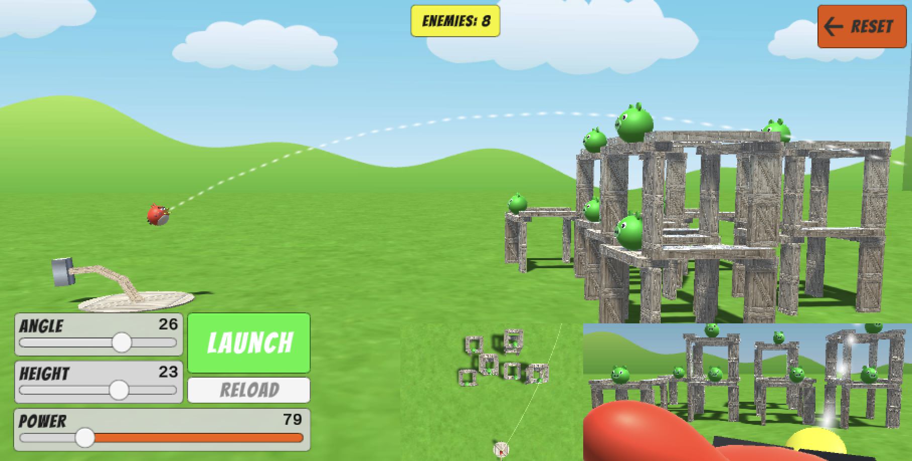 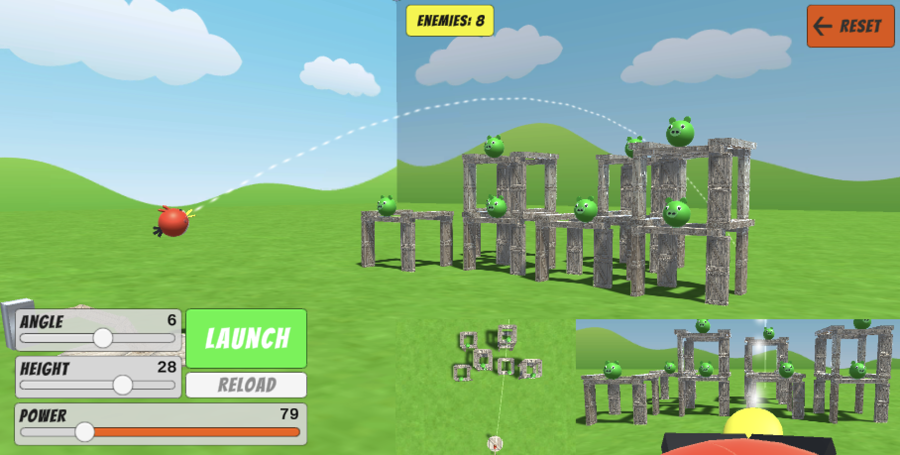
Developers Benjamin Rose
Nathan Ramos
App Name: Lightsaber Training
A lightsaber inspired training game where the user controls a SceneNode arm with three generations, and can control swinging the leaf (saber) and joints in the wrist/arm using the mouse 1 or 2 + alt. A droid flies back and forth in the game scene firing lasers at the player, and the player has hit indication spheres that are generated at the location of the incoming laser for ease of hitting the lasers. You can control the laser speed with a slider for added/decreased difficulty, and you can also change the color of the saber with a drop down menu which also controls the illumination of the scene. Upon laser contact with the droid, the droid will play an explosion animation. The user can manipulate the camera for a tumbling or zoom effect, and can also have a view of what the droid is seeing from a camera placed upon the top of the droid.
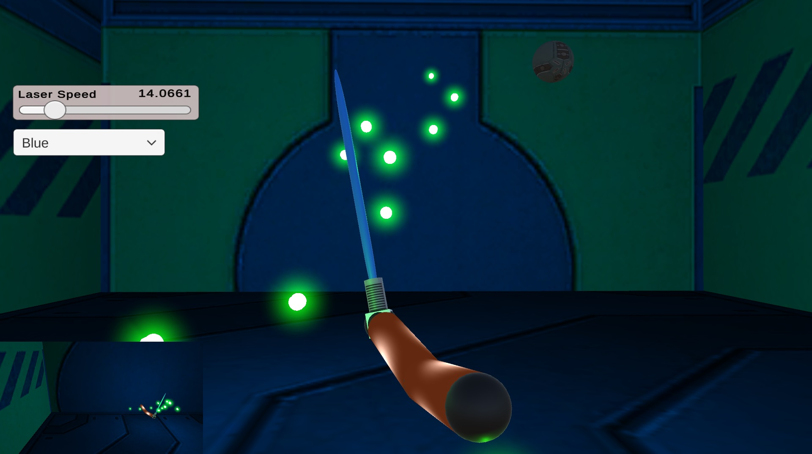 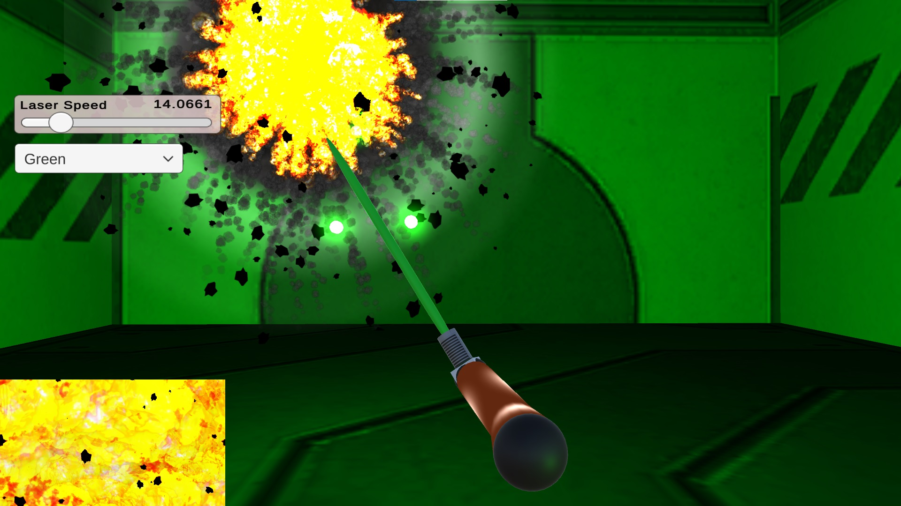 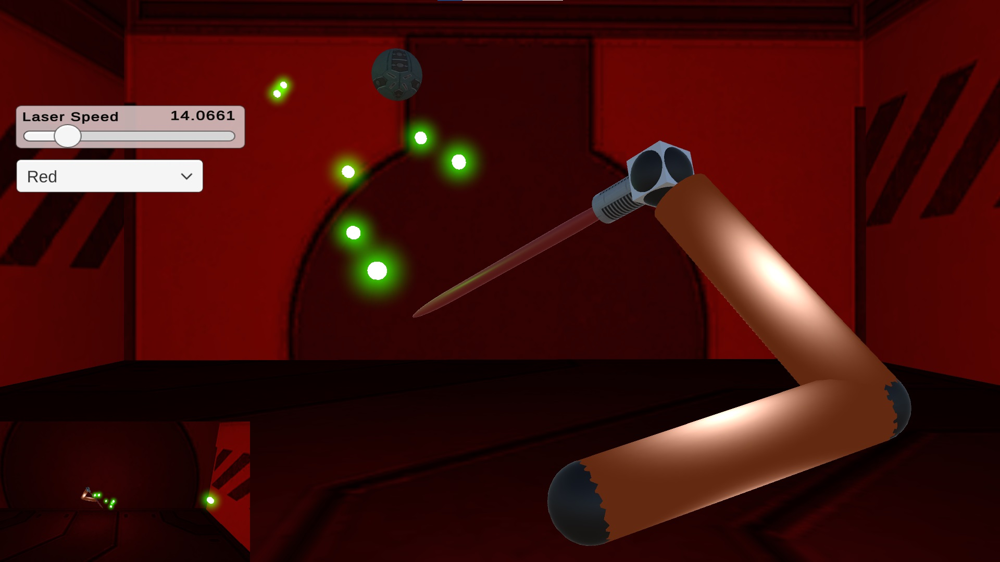
From Unity Asset Store: Volumetric Lines, ArtskillZ Store: Free SciFi Textures, ParticleProFX
Developers Louie Escalera
Nathan Zamboli
Andrew Dinh
App Name:Flamming Basketball
Our project, inspired by the carnival basketball game, allows players to shoot a basketball at three hoops by holding and releasing the left mouse button for desired power. The middle hoop remains stationary, while the left and right hoops move horizontally and vertically. The player can manipulate their camera, and a second viewport offers a closer view of the traveling basketball, with additional UI options for controlling hoop animation speed, lights, and court textures.
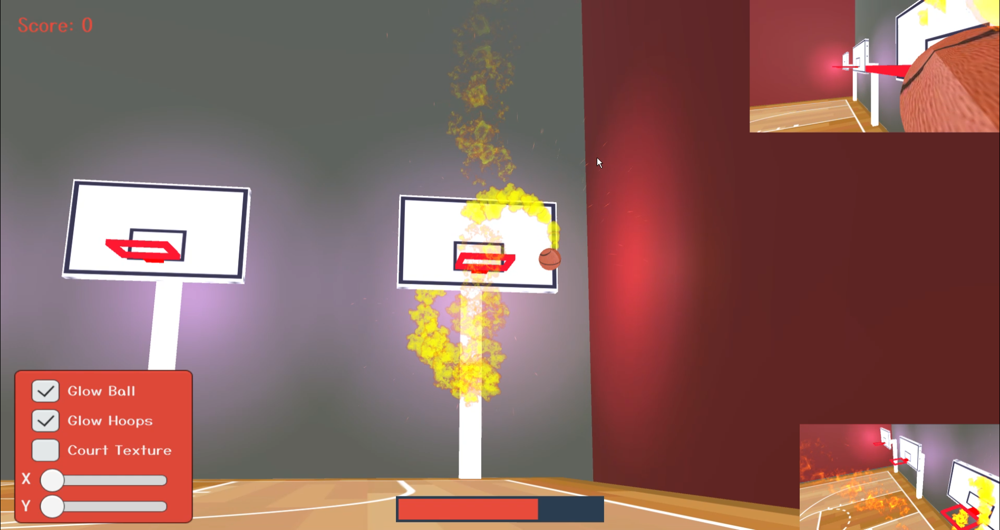 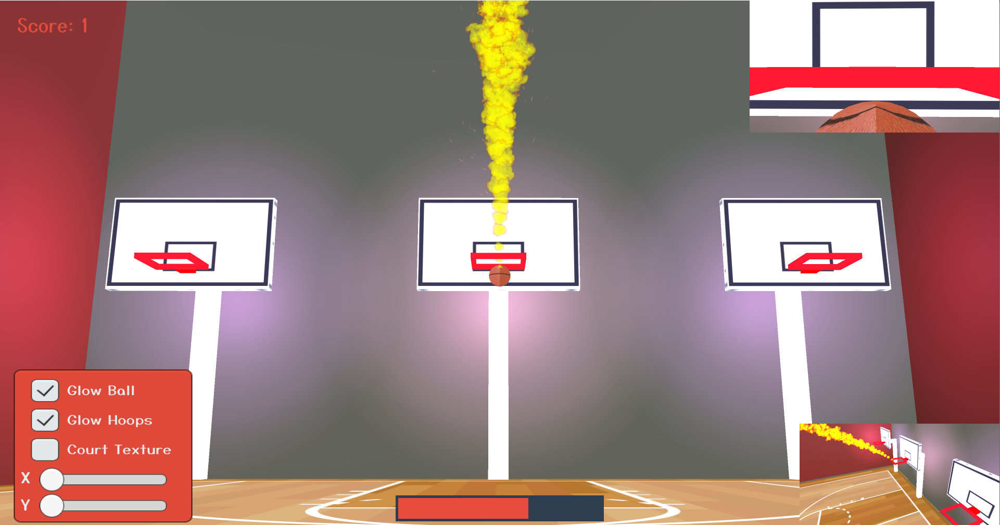 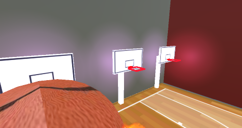
From Unity Asset Store: Particle Pack
Team 7 Developers Jonathan Spradlin
Noah Fagerlie
Aaron Nguyen
App Name: Whack-A-Mole
A dexterity game where you control a robotic hammer to hit moles that are popping thier head out of pipes. The hammer is a SceneNode heirarchy model that includes a base and three generations to the leaf node. A very small sphere is attached to the bottom of the hammer to provide hit detection to the moles. The moles are made of multiple capsules arranged to generally present as the varmint. There are two cameras that can be toggled between at any time using the TAB key and holding ALT and any of the mouse keys will manipulate selected camera in multiple ways. When a hit is detected the ground texture temporarily changes to a POW texture and the mole does an acrobatic high jump and spin before returning back to the pipe. When a hit occurs the score counter will increment by one.


Developers Ania Vakht
Malachy Eagen-Rataezyk
The Final Frontier
This program allows the user to explore a fictional solar system. The user controls a spaceship and when a celestial body is hit, the spaceship bounces off. It is also possible to spawn in asteroids that split and bounce off when hitting a celestial body. The user can also change the speed at which the simlations operates.
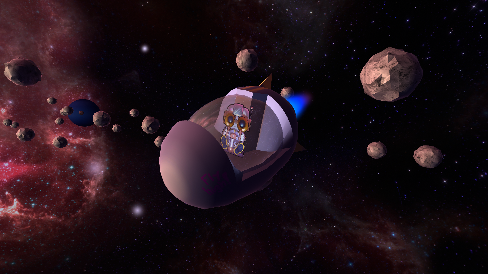
 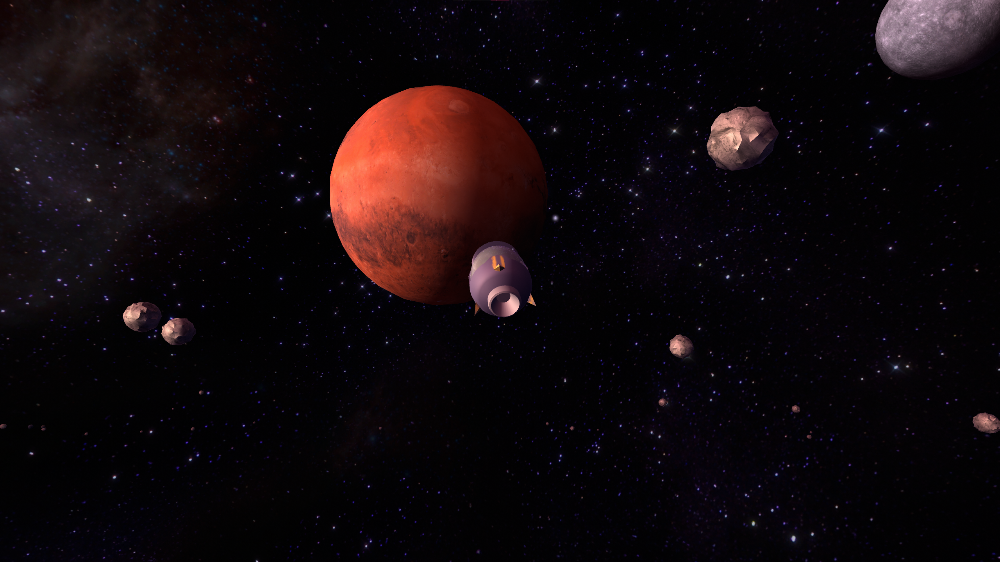
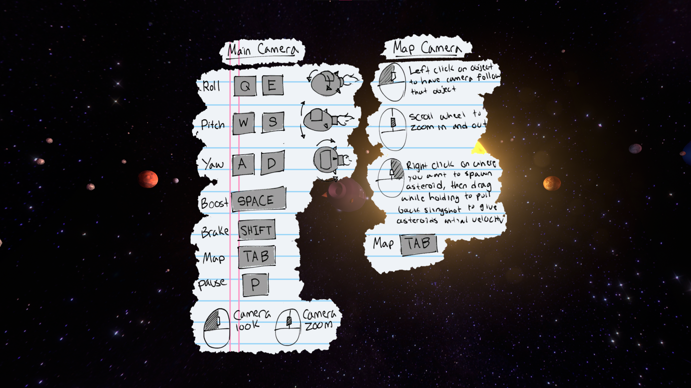
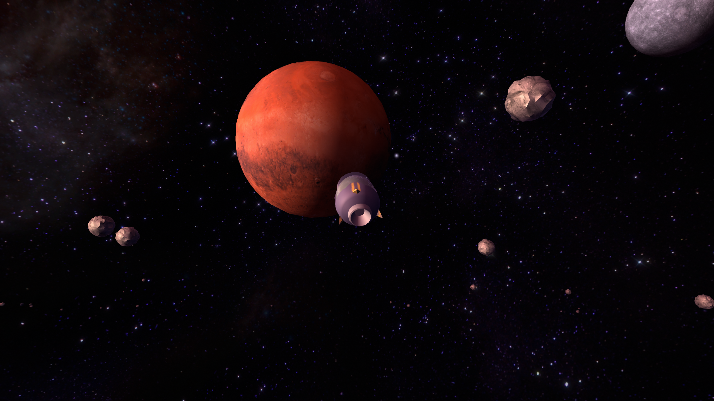
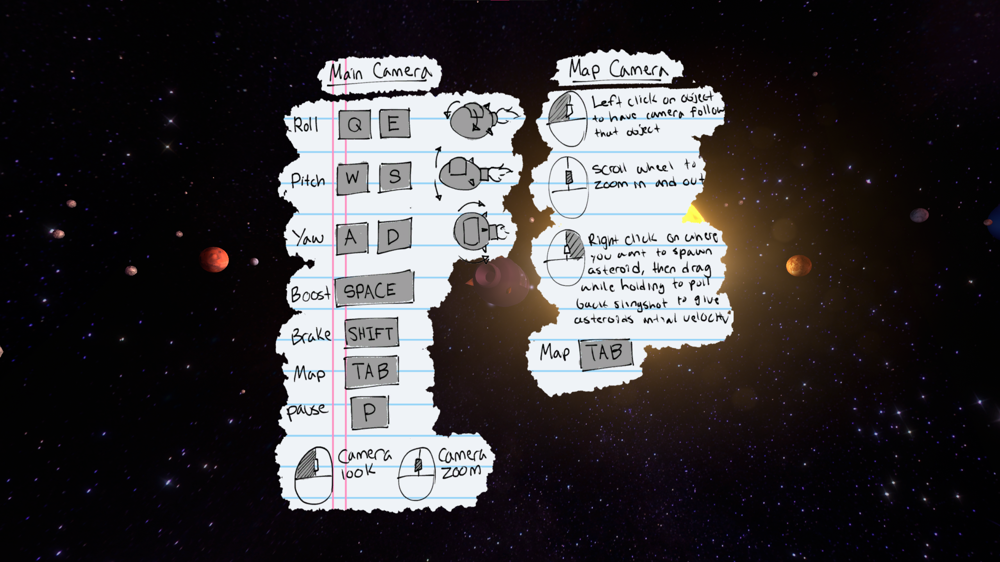
Assets we Used:
Textures for planets, star, and moons: https://www.solarsystemscope.com/textures/
Skybox textrues: https://assetstore.unity.com/packages/2d/textures-materials/sky/spaceskies-free-80503
Spaceship model, and asteroid models: modelled in Blender 4.0 by Malachy Eagen-Rataezyk
Pilot png, controls png: modelled in Clip Studio Paint by Malachy Eagen-Rataezyk
Developers
Bryan Lin
Dan Nguyen
App Name: Horror Maze Generator
A sandbox game inspired by horror games that generates a random dark maze for the player to wander in.
Players move using W & S, change directions with A & D, and move their arms by left or right clicking. Glowing orbs can be collected and temporarily leave a strong light to help navigation.
A minimap in the top left corner is available for the player to use and can be zoomed in using the scroll wheel.
We aimed to push the limits of how we can manipulate illumination of 3D objects and environments to immerse viewers.
If desired, users can adjust the size of the maze within the scripts or adjust the strength of illumination on prefabs and the player object within Unity Editor.
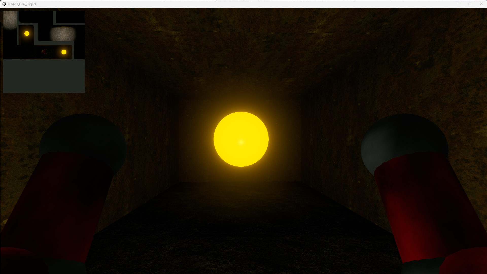 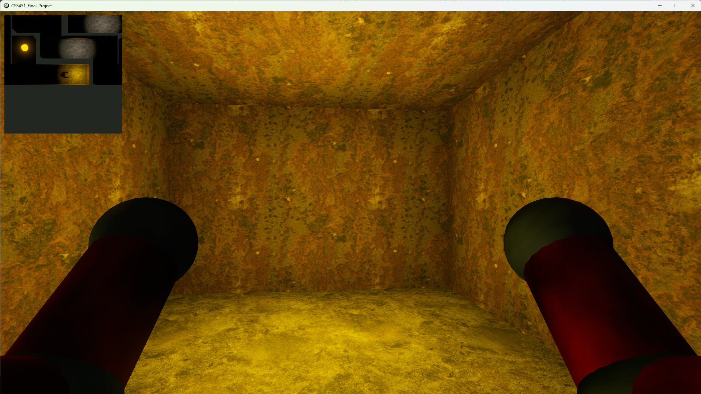 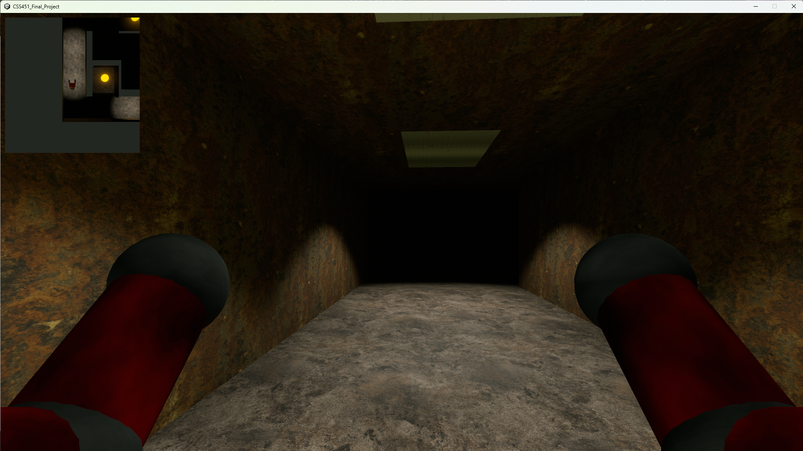
Assets we used:
"25+ Free Realistic Textures - Nature, City, Home, Construction & More" (https://assetstore.unity.com/packages/2d/textures-materials/25-free-realistic-textures-nature-city-home-construction-more-240323)
by Game Buffs is licensed under Standard Unity Asset Store EULA Extension Asset (https://unity.com/legal/as-terms).
“Basic Metal Texture Pack” (https://assetstore.unity.com/packages/2d/textures-materials/metals/basic-metal-texture-pack-37402)
by Joseph Steffensen is licensed under Standard Unity Asset Store EULA Extension Asset (https://unity.com/legal/as-terms)
Ambience by Pixabay via Pixabay
Sound Effects by Vita-chi sozaikan (http://www.vita-chi.net/sozai1.htm)
Developers
Anthony Hu
Jacob White
VERY ANGRY MANN
VERY ANGRY MANN is a game where the objective is to destroy drones within the time limit, to achieve the highest possible score. Mann is angry that the government is spying on him with their drones. As the blood moon rises, Mann becomes very angry. Mann is so angry that he is only able to move his body by swinging his arms. To relieve Mann’s anger, drones must be destroyed. Once Mann starts breaking the drones, police will come to arrest him. Break drones to increase your score as much as possible before getting arrested.
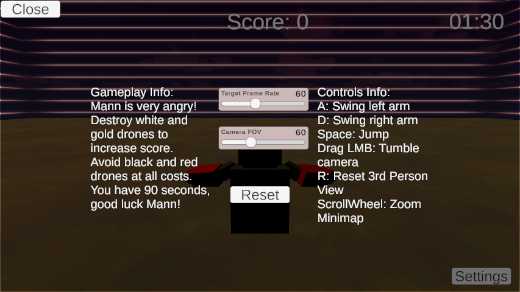 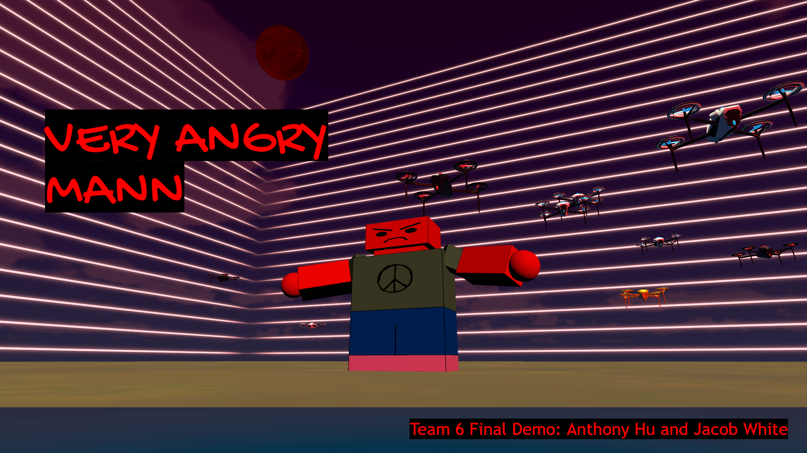
Assets we used:
https://assetstore.unity.com/packages/3d/vehicles/air/simple-drone-190684
https://assetstore.unity.com/packages/vfx/particles/legacy-particle-pack-73777
https://assetstore.unity.com/packages/2d/textures-materials/nature/handpainted-grass-ground-textures-187634
https://assetstore.unity.com/packages/2d/textures-materials/sky/free-stylized-skybox-212257
https://assetstore.unity.com/packages/2d/textures-materials/sky/earth-planets-skyboxes-53752
Developers JJ Hartog
Dillon Evans
Car Simulator
This project is a driving simulator with a car built with a custom scene hierarchy. We support collision between the car and any present unity quads (i.e., the floor & walls). The main camera is controllable with "alt" and the mouse while the secondary camera is controllable with "control" and the mouse with drop down selection for the perspective of each. The car is illuminated by a point light at the starting position and supports the animation of different car parts through sliders. The car is controllable with W, A, S, & D (if the car is stuck try pressing A & D).
Developers Brendan Shen
Filobatire Henein
Ali Elgazzar
App Name: Unity Ping Pong Game
Welcome to a cool two-player ping-pong game where you and your friend can battle it out on the same computer! Player 1 moves left and right using the AD keys, and you can spice up the camera angles by holding down the shift key and tapping the WASD keys. Player 2, on the other hand, cruises left and right using the Left and Right Arrow keys, and controls the camera by holding down the M key and using the Up, Down, Left, and Right keys. Feel free to customize your gaming experience by diving into the menu tab to tweak the game settings and add more balls to the action. Your goal? Score points by getting the ball into your opponent's goal, which is perched at the top of each side's tunnel. Keep an eye on the Scoreboard, as it updates with each epic goal you make. Let the ping-pong showdown begin!